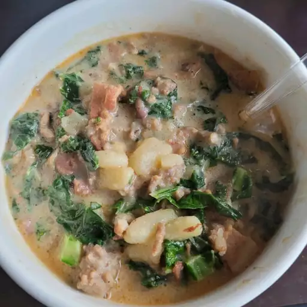

Super-Delicious Zuppa Toscana

Description
Prep time: 25 minutes
Cook time: 1 hour
Total time: 1.25 hours
Servings: 6
This is an oh-so-good recipe. Just the right
amount of spice to make you take a cold drink
but definitely keep coming back for more! This
soup is irresistible!
Ingredients
- 1 pound bulk mild Italian Sausage
- 1 1/4 teaspoons crushed red pepper flakes
- 4 slices of bacon, cut into 1/2 inch pieces
- 1 large onion diced
- 1 tablespoon minced garlic
- 5 (13.75 ounce) cans chicken broth
- 6 potatoes thinly sliced
- 1 cup heavy cream
- 1/4 bunch fresh spinach, tough stems removed
Directions
- Cook the italian sausage and red pepper flakes in
a Dutch oven over medium-high heat
until crumbly, browned, and no longer pink 10-15 minutes.
Drain and set aside.
- Cook the bacon in the same Dutch oven until crisp, about 10
minutes. Drain, leaving a few tablespoons
of drippings with
the bacon in the bottom of the Dutch oven. Stir in the onions
and garlic; cook until onions
are soft and translucent, about
5 minutes.
- Pour the chicken broth into the Dutch oven with the bacon and onion
mixture; bring to a boil over high heat.
Add the potatoes, and boil
until fork tender, about 20 minutes. Reduce heat to medium and stir
in the heavy cream
and cooked sausage; heat through. Mix the spinach
into the soup just before serving.